Хроносфера
Как государство строило Сочи, 1838–2026
Документальный маршрут в двенадцати главах
Маршрут по курсу «Основы российской государственности», НИУ ВШЭ, 2026
Кадр: AndrewBaskakov, 2010, CC BY-SA 3.0
Оглавление
-
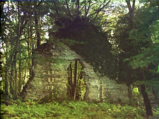
Пролог · до 1838До 1838 годаДольмены, Ахштырская пещера, храм над ЛооДо форта здесь тысячи лет жили люди — и оставили следы в камне. -
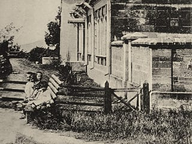
Глава 1 · 1838Навагинское укреплениеУстье реки СочиГород начался с крепости: её заложили 21 апреля 1838 года, через восемь дней после высадки. -
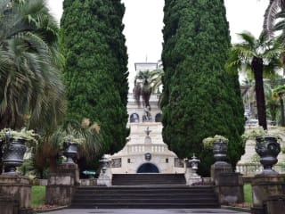
Глава 2 · 1892ДендрарийВилла «Надежда», Курортный проспектПарк, которому больше ста тридцати лет, посадил издатель газеты, а не ботаник. -
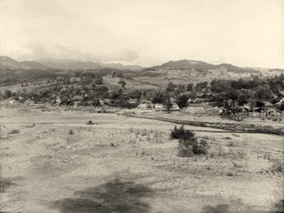
Глава 3 · 1898«Ривьера» и «Подвиг во имя жизни»Парк «Ривьера»Парк, где гуляли отдыхающие, в 1941 году стал тылом госпиталей. -
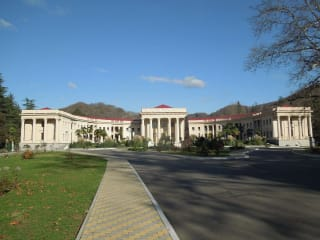
Глава 4 · 1902МацестаДолина реки МацестыСначала две деревянные ванны у пещеры, потом здание с колоннами, как античный храм. -
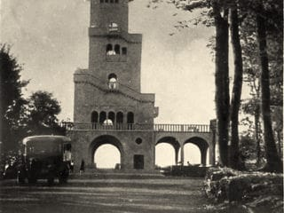
Глава 5 · 1936Гора АхунСмотровая башня Большого АхунаСначала в гору проложили дорогу, потом на вершине поставили башню, чтобы море и горы были видны сразу. -
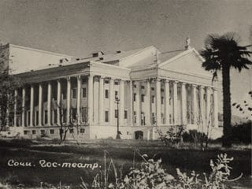
Глава 6 · 1937Зимний театрТеатральная улица, 2Право на отдых записали в Конституцию, а для отдыхающих построили театр, похожий на древнегреческий храм. -
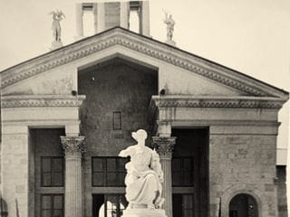
Глава 7 · 1955Морской вокзалМорской порт СочиПосле войны курорту понадобились новые ворота — с моря. -
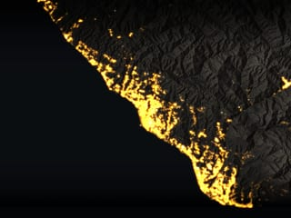
Интерлюдия · 1838–2026Как рос городБольшой Сочи с высоты153 850 зданий, которые стоят сегодня, загораются на карте по году появления. -
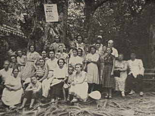
Глава 8 · 1931Тисо-самшитовая рощаХоста, Кавказский заповедникРеликтовый лес берегли с 1931 года, а погубила его бабочка, завезённая с саженцами для Олимпиады. -
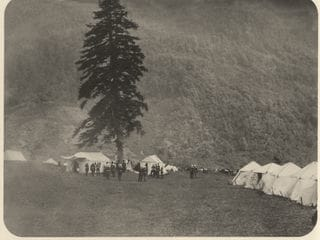
Глава 9 · 1864Красная ПолянаУрочище КбаадэЗдесь в 1864 году завершилась Кавказская война, а полтора века спустя прошла Олимпиада. -
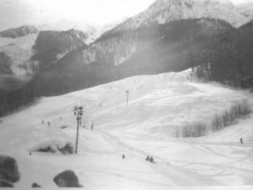
Глава 10 · 2014Роза ПикХребет Аибга, 2320 мЧтобы Сочи принял зимнюю Олимпиаду, ему понадобились горы. -
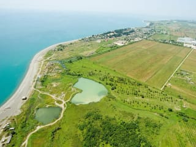
Глава 11 · 2014Олимпийский паркИмеретинская низменностьЗимнюю Олимпиаду построили на берегу тёплого моря, на бывших полях. -
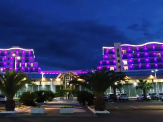
Глава 12 · 2020«Сириус»Федеральная территория «Сириус»Олимпийские здания не опустели: в них стали учить. А потом у этой земли появился особый закон. -
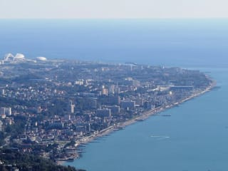
Эпилог · 2038Сочи-2038Генплан до 2044 года и открытые вопросыМаршрут закончился сегодняшним днём. Город продолжается.
После маршрута
Рельеф: AWS Terrain Tiles, SRTM. Линия маршрута проведена по прямой между точками. Точка на карте открывает свою главу.
Главы идут по маршруту, а не строго по календарю: так их можно пройти пешком и на транспорте. Поэтому четвёртая возвращается к 1902 году, а восьмая и девятая уводят от моря в ущелье Хосты и в горы и заодно назад, к 1931 и 1864 годам; каждая такая глава говорит об этом в блоке «Следующая глава». Хронологию целиком собирает эпилог.